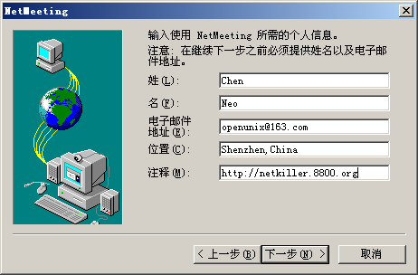
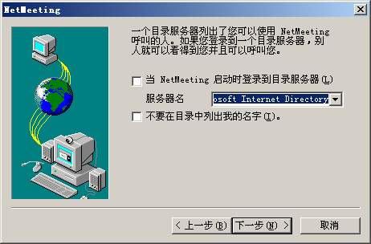
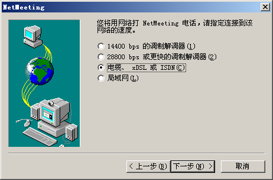
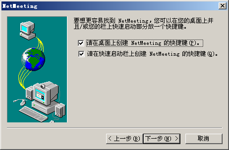
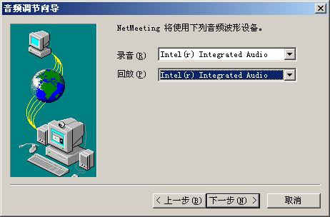
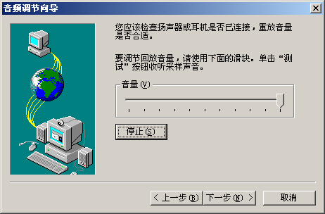
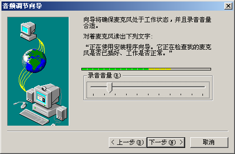
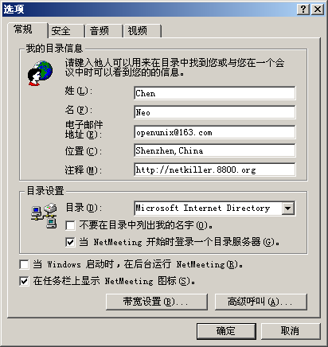

目录
安装环境 ubuntu 7.10
http://www.gnugk.org/
sudo apt-get install gnugk sudo apt-get install ohphone
start|stop|restart|force-reload
netkiller@shenzhen:~$ sudo /etc/init.d/gnugk
Usage: /etc/init.d/gnugk {start|stop|restart|force-reload}
Start
netkiller@shenzhen:~$ sudo /etc/init.d/gnugk start Starting H.323 gatekeeper: gnugk. netkiller@shenzhen:~$ netkiller@shenzhen:~$ sudo /etc/init.d/gnugk stop Stopping H.323 gatekeeper: gnugk. netkiller@shenzhen:~$
gatekeeper.ini
[Gatekeeper::Main] Fourtytwo=42 [GkStatus::Auth] rule=allow
How do I test Gatekeeper
first, telnet tools
netkiller@shenzhen:~$ telnet 127.0.0.1 7000 Trying 127.0.0.1... Connected to 127.0.0.1. Escape character is '^]'. Version: Gatekeeper(GNU) Version(2.2.5) Ext(pthreads=1,radius=1,mysql=1,pgsql=1,firebird=1,large_fdset=0,crypto/ssl=1) Build(Feb 2 2007, 21:39:07) Sys(Linux i686 2.6.20-15-server) GkStatus: Version(2.0) Ext() Toolkit: Version(1.0) Ext(basic) Startup: Fri, 09 Nov 2007 17:26:23 -0500 Running: 0 days 00:08:34 ;
Windows XP
Start NetMeeting
Start->Run->conf











Tools -> Option -> Advence

网关守卫设置